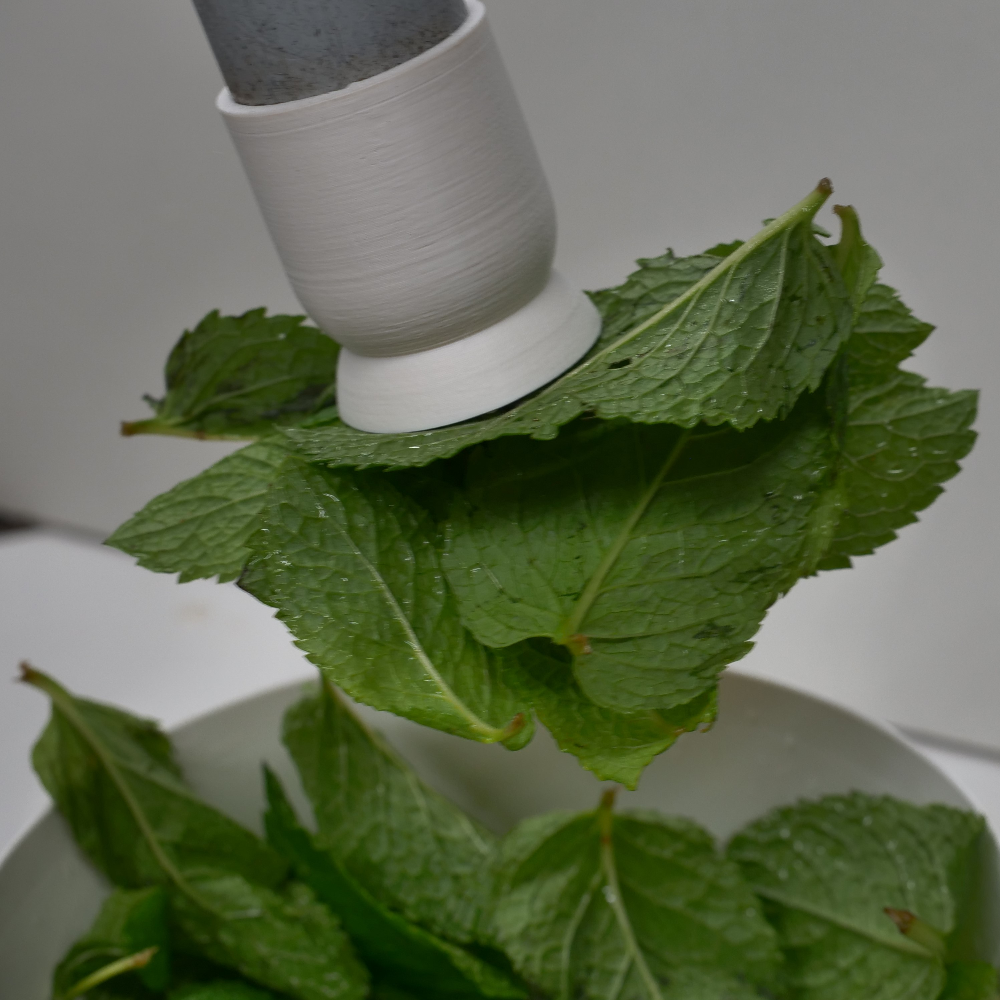
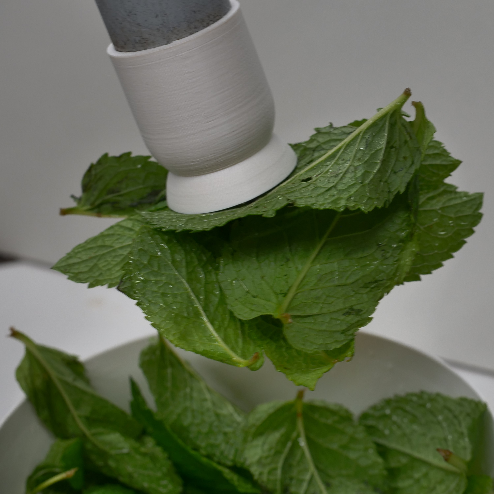

Robot Mojito-Bartender
 

The project's objective was to engineer a module capable of dispensing mint leaves automatically for Mojito preparation, with a primary focus on concept development. The methodology involved analyzing the Mojito production process, evaluating requirements, drafting concepts, conducting a proof of concept, and implementing the system. Various approaches were tested, including mechanical gripping mechanisms, gravimetric methods, and the use of air and water flows. Ultimately, a concept utilizing a water vortex with a permeable conveyor belt was selected. The developed system demonstrated high reliability and precision in mint leaf dispensation during the testing phase, consistently delivering a defined quantity of mint leaves. The system proved to be food-safe and integrable into the overall Mojito robot system. The Project concludes with recommendations for improvement and the successful development of the mint subsystem. Through innovative approaches and meticulous implementation, a functional, efficient, and safe module was realized for the Mojito robot bartender.
VR Locomotion Systems
Virtual reality (VR) is still in its infancy. Nevertheless, it already allows us to experience unknown realities in a miraculously beautiful way. The difficulty with VR is to bring the user and virtual reality into harmony. Therefore, locomotion in VR is one of the biggest challenges in the VR-industry. Due to the lack of space, joystick and teleportation systems are used for locomotion. The disadvantage of navigating with either of those systems is poor immersion and the wide occurrence of motion sickness. Personally, I get motion sick in minutes. That’s why I created a VR locomotion solution that allows a better experience and reduces motion sickness to a minimum.